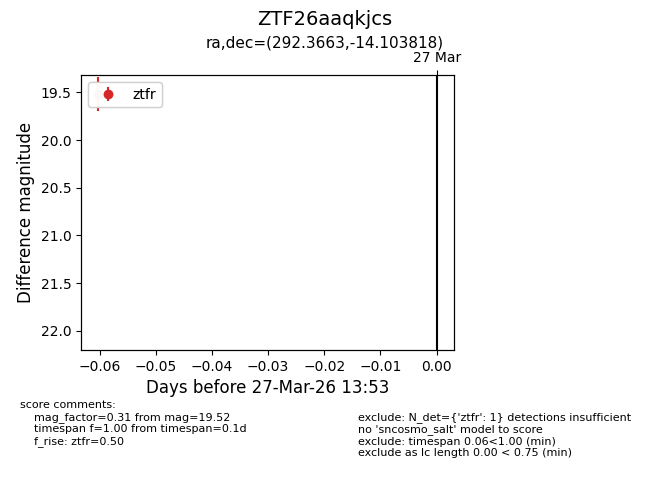
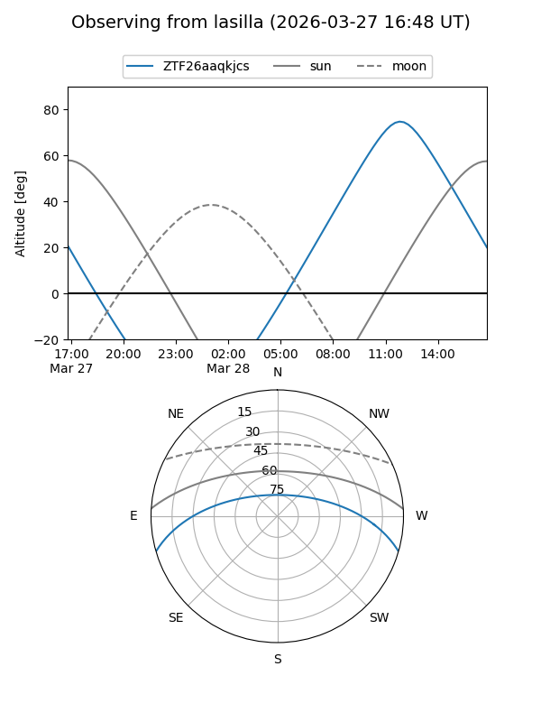
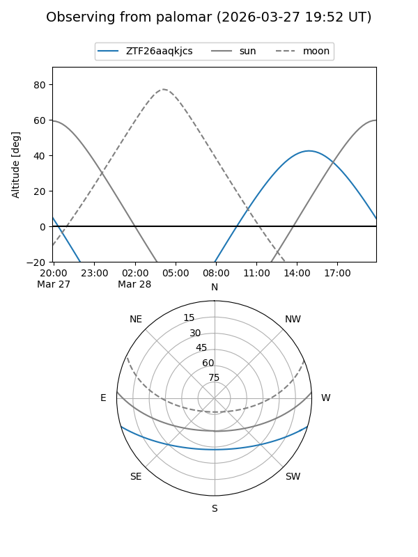

ZTF26aaqkjcs
Target ZTF26aaqkjcs at 2026-03-27 13:56
Aliases and brokers:
FINK: link
Lasair: link
ALeRCE: link
alt names
ZTF26aaqkjcs (ztf,fink_ztf)
Coordinates:
equatorial (ra, dec) = 292.3663,-14.10382
equatorial (HMS+DMS) = 19:29:27.92,-14:06:13.75
galactic (l, b) = (24.3807,-14.69528)
Flags:
Photometry:
last ztfr=19.52
1 ztfr detections
Lightcurve

Visibility


Additional plots